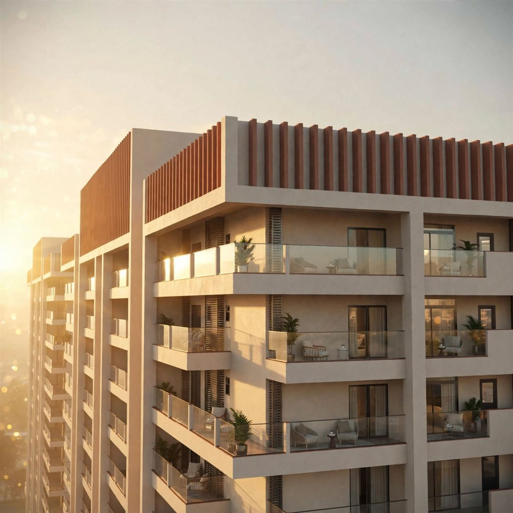
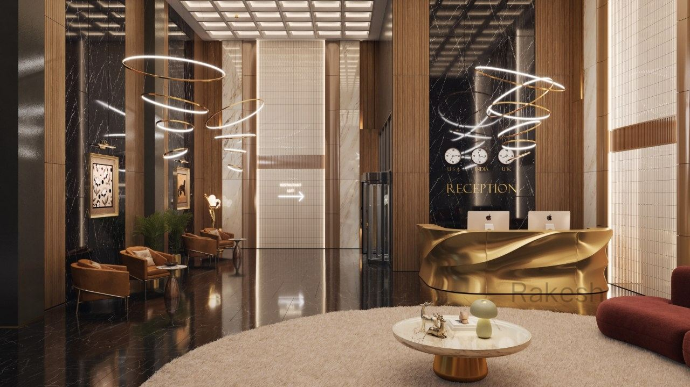
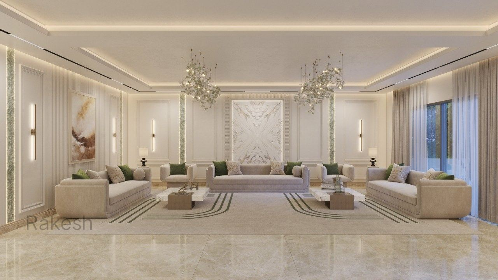
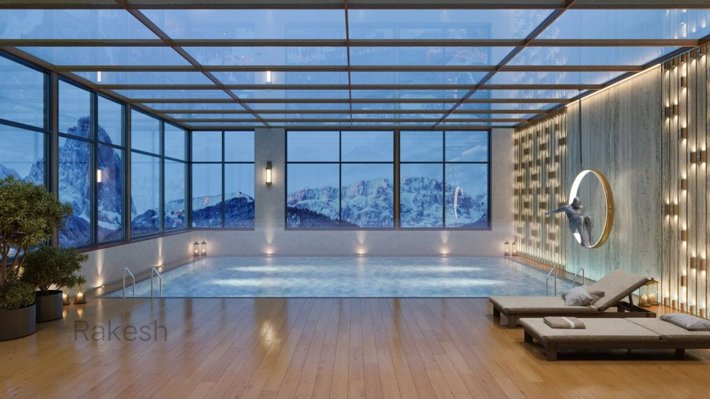
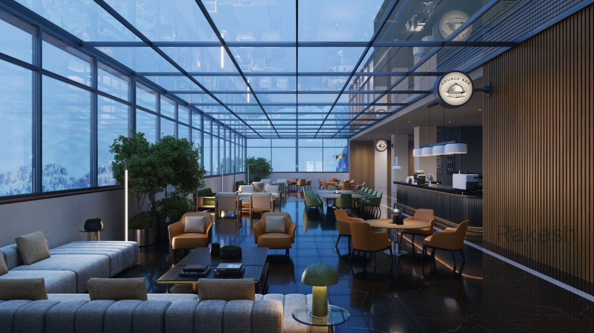
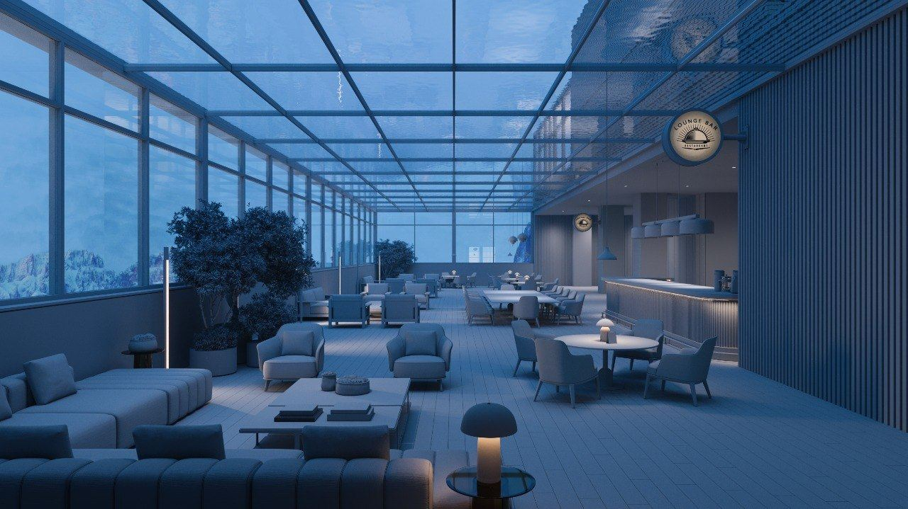
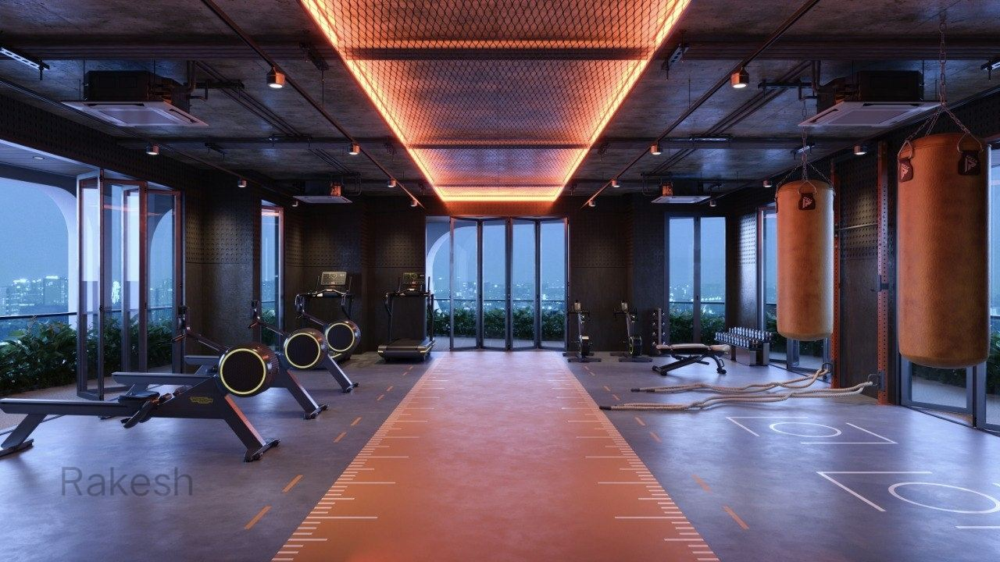
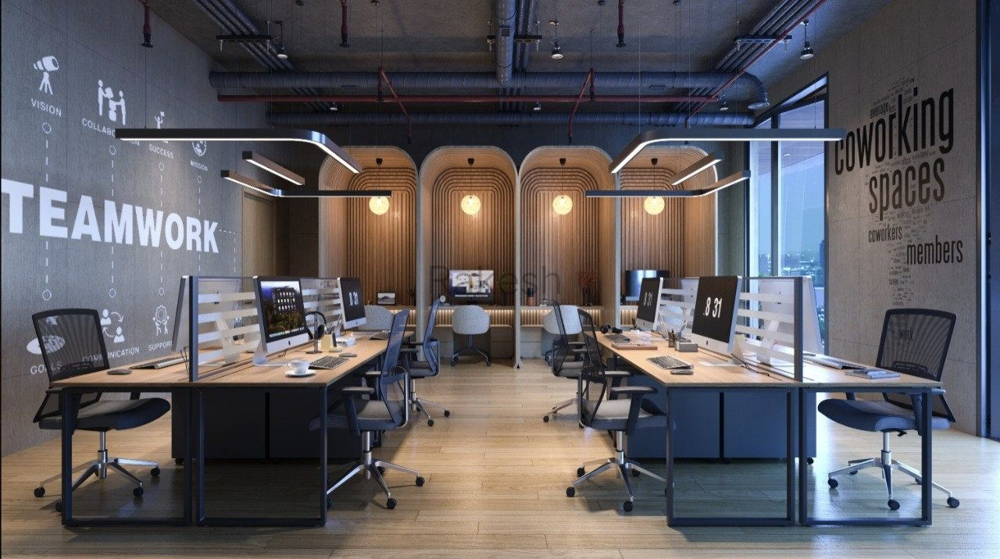
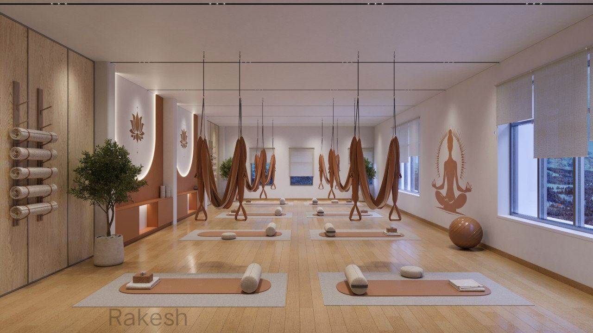
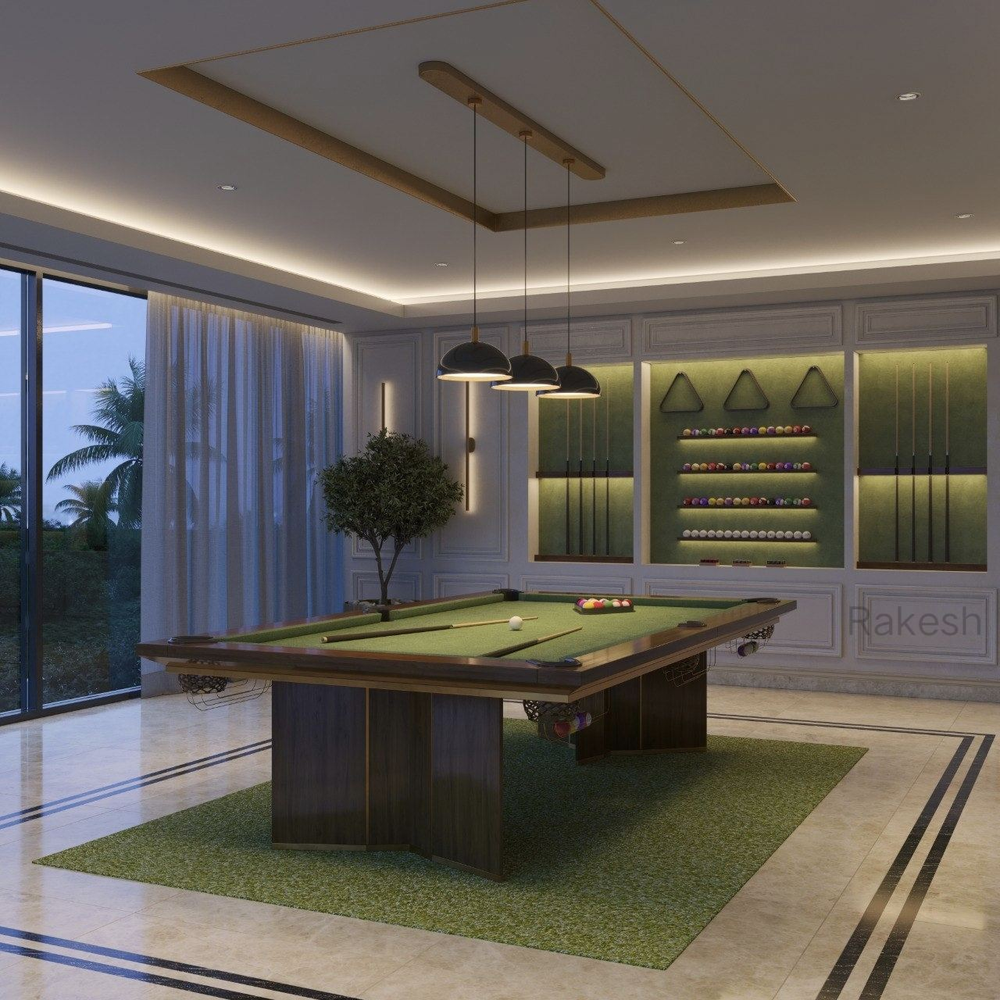

I help architects, interior designers, and brands in Hyderabad translate ideas into sellable, photoreal imagery. Specializing in interior, exterior archviz and product visualization that feels built, not rendered.
Not just pretty renders. I translate 2D drawings, moodboards and references into spatial stories that help clients approve faster and sell earlier.
Warm, lived-in interiors with accurate materials, daylight studies, and styling that feels human. Bedrooms, kitchens, cafes, retail.
Context-aware exteriors - from Jubilee Hills villas to Gachibowli high-rises. Day, dusk, and night scenarios.
Studio-grade product renders for e-commerce, ads, and packaging. Focus on CMF and macro detail.










Every image follows the same disciplined pipeline. No shortcuts. This is why clients get consistent results, not lottery renders.
Clean quad topology from AutoCAD / SketchUp. Walls, openings, custom furniture. No kitbash unless requested.
PBR materials, real-world scale, displacement where it matters. Wood grain follows direction. Fabric has weight.
HDRI + Corona Sun + practical lights. Lightmix setup so you can choose mood in post without re-render.
32-bit render, ACES, denoising off. Grade in Photoshop, subtle bloom, lens effects. Deliver 4K + web + RAW.
Corona for interiors because it handles light bounce like real life. V-Ray when clients need vegetation scatter and huge exteriors. Blender for fast product ideation. Unreal only when client asks for walkthrough.
I obsess over micro-details: edge wear, dust in sunbeams, fabric tension. Clients stop asking 'is this real?'
48-72h first look. I work Hyderabad hours, so revisions happen while US/EU sleeps. Your deadline is mine.
Give me DWG, SketchUp, or a napkin sketch. I understand setbacks, FSI, vaastu constraints, and client taste.